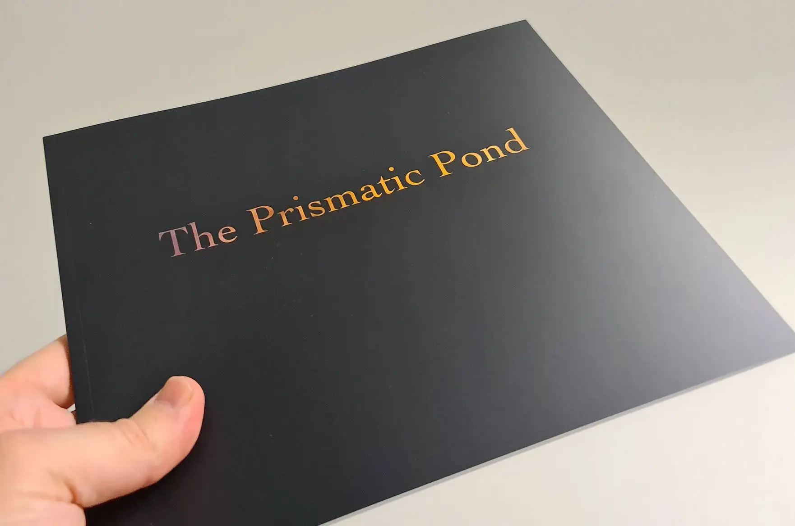

The Prismatic Pond
Method Photo Press 2022

It Began With a Riot of Colour…
This book on a small pond at Forty Hall in Enfield, London, less than a kilometre away from my house.
The transformation of the space began under the surface in the winter of 2017.
A Transformative Process
The book explores the metamorphosis of this small, seemingly unremarkable body of water over the past few years. A summer’s heat creates a stagnant soup, an autumn with the sun low in the sky, a winter’s frosted reflections. The conditions became perfect for sunlight to refract off the pond’s surface and display magical spectral effects, all found in these photographs.
A Magical Effect
There’s a joy that can be experienced in a long-term project; the understanding of light, pattern and texture; the anticipation of change; the imperceptible (to others) differences you notice as you return time and time again; the chance encounters with wildlife, where they are wary of you but accept your presence. It builds and builds until you feel you intimately know the place.
This book celebrates that quiet knowing, that riot of colour, and the subtle beauty that can be found in the most unlikely of places.
Specifications
Dimensions: 200 x 245 mm (landscape)
Pages: 62pp
Cover: 350gsm Silk
Text: 170gsm Silk
Printed with care by Wells Printing
£17.50 + shipping. Signed, limited edition of 100
Copies ready for immediate dispatch
Please choose your correct shipping location on the next screen
Please note: Method Photo is not shipping to the EU as there is huge uncertainty surrounding the EU’s GSPR (thanks Brexiters!)